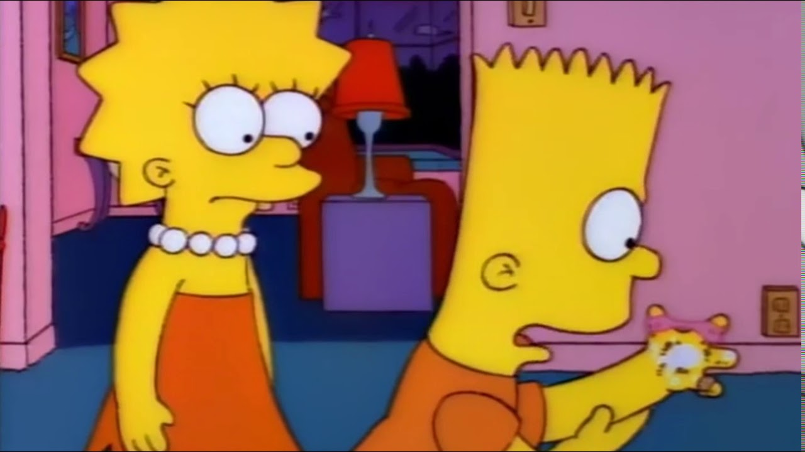

"마스크 안 쓰면 버스, 택시 못타요"
긴급재난지원금 | 생활 속 거리두기
신종 코로나바이러스 감염증(코로나19) 일일 신규 확진자 수가 닷새만에
20명 후반대로 떨어졌다. 중앙방역대책본부는 31일 0시 기준 코로나19
신규 확진자가 27명 늘어
경기도 성남시는 가천대학교 학생 2명이 코로나19 확진 판정을 받음에
따라 이들과 접촉한 가천대 학생과... 오전 코로나19에 확진된 뒤
밀접접촉자로 분류돼 검사를 받은
丁총리 "코로나 안심할 때 아니다…콜센터⋅IT업종⋅육가공
불시점검"
[단독]코로나 이후 국가신용등급 상향은 '0건'
중국 우한을 넘어 전 세계 곳곳으로 코로나19가 퍼진 3월 이후로
국가신용등급이 상향된 국


코로나19 어제 27명 신규확진-닷새만에 20명대로…지역 산발감염(종합)
신종 코로나바이러스 감염증(코로나19) 일일 신규 확진자 수가 닷새만에
20명 후반대로 떨어졌다. 중앙방역대책본부는 31일 0시 기준 코로나19
신규 확진자가 27명 늘어
경기도 성남시는 가천대학교 학생 2명이 코로나19 확진 판정을 받음에
따라 이들과 접촉한 가천대 학생과... 오전 코로나19에 확진된 뒤
밀접접촉자로 분류돼 검사를 받은
丁총리 "코로나 안심할 때 아니다…콜센터⋅IT업종⋅육가공
불시점검"
[단독]코로나 이후 국가신용등급 상향은 '0건'
중국 우한을 넘어 전 세계 곳곳으로 코로나19가 퍼진 3월 이후로
국가신용등급이 상향된 국